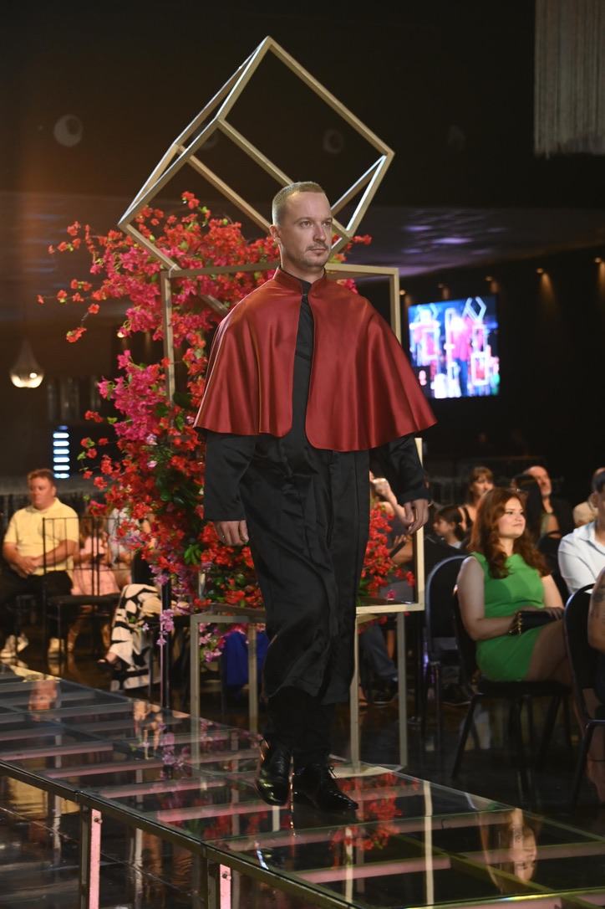

🤖
Em andamento
IA para Educadores
Pesquisa e desenvolvimento de estratégias para integrar Inteligência Artificial no processo de ensino e aprendizagem, capacitando docentes para o uso pedagógico de IA.
Professor Universitário | Pesquisador | Desenvolvedor Web e Mobile
Saiba mais ↓Sobre

Professor efetivo com dedicação exclusiva na UTFPR, câmpus Guarapuava, lotado no curso de Tecnologia em Sistemas para a Internet. Bacharel em Ciência da Computação pela UNICENTRO (PR), Mestre em Informática e Doutor em Ciência da Computação pela UFPR, com pesquisa em Interação Humano-Computador e foco em Tecnologias Assistivas e Acessibilidade em LIBRAS.
Atua como docente em disciplinas do básico ao avançado na área de Desenvolvimento de Aplicações Web e Mobile, e é professor permanente do Mestrado Profissional em Promoção da Saúde do Centro Universitário UniGuairacá.
Tem forte atuação em pesquisa nas áreas de Tecnologia Aplicada à Saúde e, atualmente, no uso de Inteligência Artificial aplicada à Educação.
Professor por vocação, pesquisador por curiosidade.
Trajetória
Professor do Magistério Superior no curso de Tecnologia em Sistemas para Internet, em dedicação exclusiva.
Quase 10 anos como professor e cerca de 8 anos como coordenador dos cursos de Análise e Desenvolvimento de Sistemas e Engenharia de Software. Liderou a criação de cursos de pós-graduação lato sensu e acompanhou a transição da instituição para Centro Universitário.
4 anos e 10 meses como professor na mesma instituição onde se formou em Ciência da Computação, contribuindo para a formação de novos profissionais.
Doutorado pelo Programa de Pós-Graduação em Informática (PPGINF), na área de Interação Humano-Computador e tecnologias para LIBRAS, com foco na geração da escrita da LIBRAS. Tese: Core-SL-SW-generator: gerador automático da escrita da LIBRAS a partir de um modelo de especificação formal dos sinais.
Ver tese →Mestrado pelo Programa de Pós-Graduação em Informática (PPGINF), na mesma área, com foco na interpretação da LIBRAS. Dissertação: Serviço web de interpretação do modelo fonológico computacional da LIBRAS para os símbolos gráficos do SignWriting.
Ver dissertação →Graduação em Ciência da Computação. Atuou como monitor da disciplina de Programação e desenvolveu iniciação científica aplicada à indústria, com o trabalho Método de Inspeção Semiótica Aplicado a um Sistema de Controle de Romaneios. Desenvolveu Trabalho de Conclusão de Curso com o tema Avaliação online da acessibilidade web para usuários na terceira idade.
Portfólio
Projetos, pesquisas e iniciativas que conduzo ou conduzi ao longo da carreira.
🚧 Portfólio em construção — conteúdo sendo atualizado em breve.
Pesquisa e desenvolvimento de estratégias para integrar Inteligência Artificial no processo de ensino e aprendizagem, capacitando docentes para o uso pedagógico de IA.
Pesquisas em Interação Humano-Computador e ferramentas computacionais para interpretação e representação da Língua Brasileira de Sinais via SignWriting.
Disciplinas e projetos de desenvolvimento web e mobile com foco em acessibilidade e boas práticas.
Criação, implantação e coordenação de cursos de graduação e pós-graduação em tecnologia.
Orientações em mestrado, especialização, residência técnica e graduação ao longo da carreira docente.
Contato
Entre em contato para colaborações, orientações ou dúvidas.